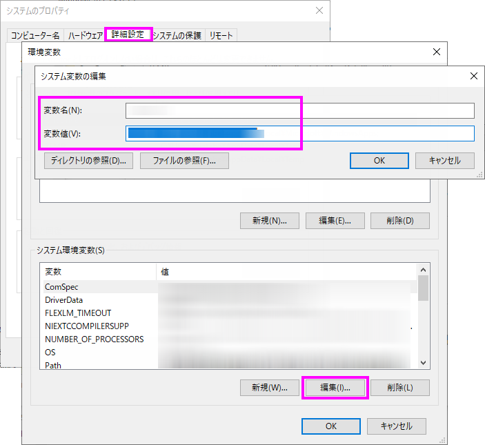
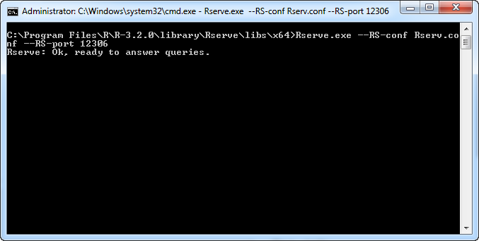
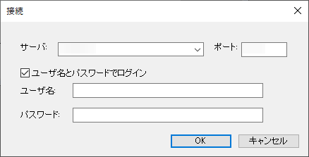

Rserveの設定
Setup-R-Server
Rserveは、クライアント側にRソフトウェアがない場合に、サーバコンピュータのRソフトウェアにアクセスできるようにします。
サーバ側の構成
RとRserveパッケージのインストール
- RをCRANからダウンロードします。以下の手順は、R 3.2.0に基づいています。
- R 3.2.0をインストールして、立ち上げます。Rコンソールでスクリプトを実行して、Rライブラリパスを取得してから、パスを開きます。
install.packages("Rserve")
- ポップアップダイアログで、ダウンロードチャンネルを選択して、OKボタンをクリックして、パッケージをダウンロードします。ダウンロード後に、パッケージが自動で開き、インストールされます。
アカウントの作成
- Rコンソールでスクリプトを実行して、Rライブラリパスを取得してから、パスを開きます。
.libPaths()[1] #output could be [1] "C:/Program Files/R/R-3.2.0/library"
- このパスをWindowsエクスプローラに入力して、このパス内のRserve/lib/x64/サブフォルダを見つけます。RserveAuth.txtという名前のテキストファイルを作成して、ユーザ名とパスワードをファイルに書きます。例えば、
Admin 123456
- Rserv.txtという名前の別のファイルを作成して、以下の内容をファイルに書きます。
pwdfile RserveAuth.txt
remote enable
auth required
plaintext enable
- Rserv.txtのファイルの拡張子を、confに変更して、Rserv.confとして保存します。
システムパスの追加
- Windowsのスタートボタンをクリックして、コントロールパネル:システムを選択します。開いたページでシステムの詳細設定を選択して、システムのプロパティダイアログを開きます。
- 詳細設定タブの環境変数...ボタンをクリックして、 環境変数グループのパスを見つけます。編集...ボタンをクリックして、システム変数の編集ダイアログを開きます。
- 変数の値編集ボックスに、R.dllファイルを含むパスを入力します。例えば、「C:\Program Files\R\R-3.2.0\bin\x64」OKボタンをクリックして、ボックスを閉じます。
- 
- Windowsのスタートメニューをクリックして、すべてのプログラム:アクセサリ：コマンドプロンプトを選択して、コマンドプロンプトウィンドウを立ち上げ、次のように入力します。
cd C:\Program Files\R\R-3.2.0\library\Rserve\libs\x64
Rserve.dllがある場所でなければ、「Enter」を押して、パスを置き換えることができます。設定を適用して、以下のコマンドを実行するために、コンピュータを再起動する必要があります。
- コマンドウィンドウに以下の内容を入力して、「Enter」をクリックします。
Rserve.exe --RS-conf Rserv.conf --RS-port 12306
次のメッセージが現れます。Rserve:Ok, ready to answer queries.
- コマンドプロンプトの新しいセッションの開始と実行：
ipconfig
Rserve PC IP：192.168.18.75
クライアント側Originの構成
- ORserve9.dllとORserve9_64.dllが、Origin EXEフォルダ内（例えば、C:\Program Files\OriginLab\Origin2016）にあることを確認してください。また、PCファイアウォールをオフにして、Rserve接続がブロックされないようにします。
- セッションのコマンドウィンドウが以下のように開かれていることを確認してください。
- 
- Origin 2016を開始して、ツール:Rserveコンソールを選択して、接続ダイアログを開きます。
- サーバ編集ボックス内のRserve.exeを実行しているマシンのIPを入力します。（このIPは、192.168.18.75といったように、RserveのPCから得られます。）ポートは、12306です。
- ユーザ名とパスワードでログインチェックボックスにチェックを入れて、ユーザ名とパスワードを入力します。例えば、これらは、Adminと123456で、それぞれ、RserveAuth.txtに保存されます。
- 
- OKボタンをクリックします。RServeコンソールの開始を確認することができます。